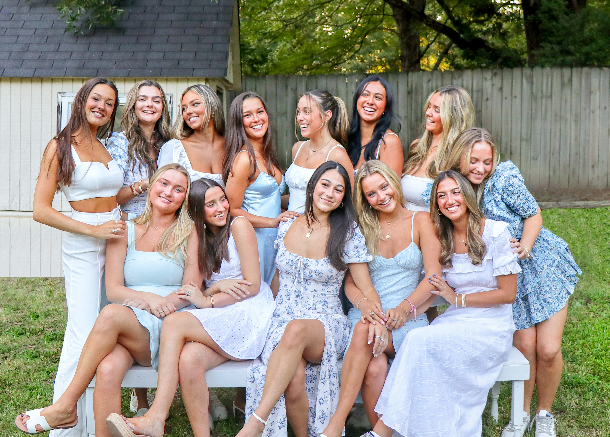

I recently started my sophmore year at Elon University, and have been doing very well. I am a double major in strategic communications and journalism and I am enrolled in five courses. I am apart of the Zeta Tau Alpha sorority where I am on program council and I help raise money, plan events, and more. I am also apart of Elon News Network where I help infront and behind cameras. I help with various things for pre-recorded and live shows like audio, graphics, cameras, and more.
I have a lot to look foward to in the next coming months! I will be going back home to Massachusetts for the month of December where I will be working at the restaraunt I have been working in since freshman year of highschool. I also am about to start applying to go abroad for the Fall 2023 semester! My hope is to spend the first semester living and learning in Europe, and being able to travel around with some of my closest friends!
Contact Me:
978-886-8723
ggaresche@elon.edu